Low Fidelity
Layout, hierarchy, and placement worked out across the product's main screens before any visual design began.
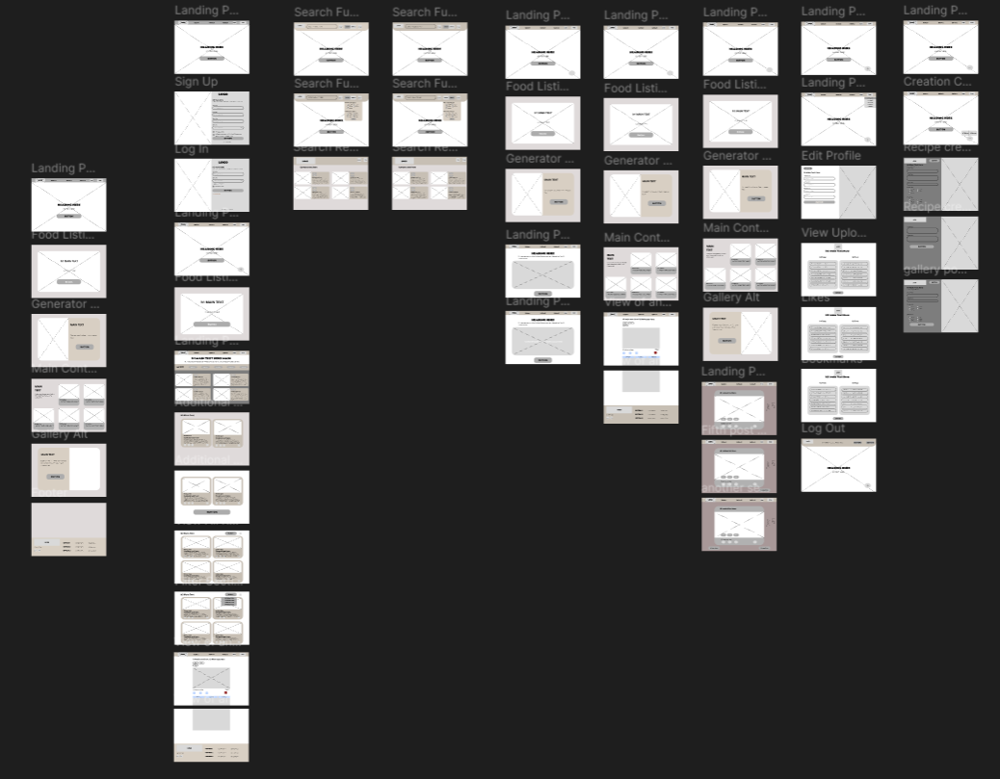
From a food discovery website to a mobile experience
TasteBuds is an interactive food discovery platform built to help people explore food, find recipes, make choices, and share their own creations. I first designed the web experience in 2025 as part of a Web Development course, taking it from low-fidelity planning through high-fidelity UI while also contributing to full-stack development. In 2026, I returned to TasteBuds as a personal design exercise to rethink the same product specifically for mobile.
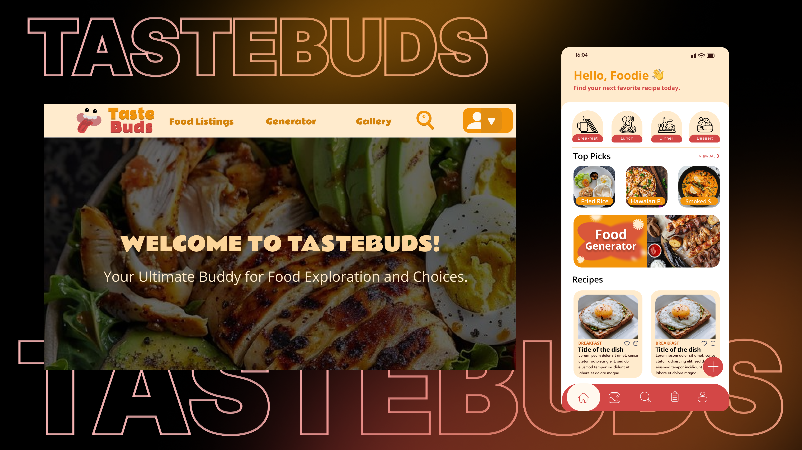
Overview
TasteBuds brings food exploration, recipes, and community content together in one platform — letting people browse food listings, search for recipes, discover something new through a random generator, explore a gallery of community posts, and create their own recipes and posts.
The project began as a college Web Development project in 2025, where I took on the UI/UX design role alongside full-stack development. A year later, I returned to it independently and redesigned the experience for mobile, using it as a chance to explore how the same product could work on a smaller, touch-based screen.
The Product
Before looking at individual screens, TasteBuds is easiest to understand as three connected ideas.
Browse food listings, search for specific content, explore featured recipes, and find something unexpected through the random generator.
Create original recipes and food-related posts to share with the TasteBuds community.
A gallery where users explore and share food-related content created by other members of the community.
My Role
I began with competitor research and open FigJam brainstorming before moving into Figma, mapping the structure of the system before designing individual screens. My work covered Vault Access, the Vault Dashboard, Vaulted Items, Vault Requests, Add Item flows, Vault Submission, shipping and vaulting, certificate status, payments, Xpert appraisal requests, fractional ownership, co-ownership listings, Vault History, and both seller and buyer experiences.
Phase 01 — 2025 · Web
Web Experience
The original TasteBuds experience was designed for people browsing both before and after signing in, with the navigation and available features changing between the two.
| Section | Purpose |
|---|---|
| Welcome | A short introduction to TasteBuds with a "Join Us" call to action. |
| Check Out These Recipes | A featured-recipe section leading into the food listings. |
| Random Generator | Introduces random food discovery with a "Find Out" call to action. |
| Share Your Creations | Introduces community content creation with an "Upload Now" call to action. |
| Top 5 Recipes | A curated way for visitors to discover content before signing in. |

Once logged in, the navigation simplified around the core product experience, with a floating action button acting as the main entry point for creating content.
From here, users could browse food listings, open individual recipes, explore gallery content, search, and create their own posts and recipes.

Design Process
Before building the high-fidelity interface, I mapped the main screens as low-fidelity wireframes — landing page, food listings, search, random generator, gallery, recipe creation, post creation, and the logged-in experience. This wasn't required by the course, but it gave me a faster way to work through layout and hierarchy before committing to visual detail, and the approach was well received in project consultations.
Low Fidelity
Layout, hierarchy, and placement worked out across the product's main screens before any visual design began.

High Fidelity
Wireframes translated into the complete visual interface, from first-time visitors through to logged-in creation flows.
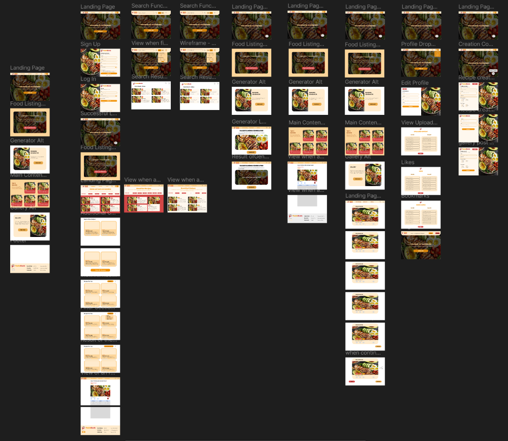
Designed the content creation flows for users to share their own recipes and food-related posts, supporting both practical recipe sharing and community engagement.
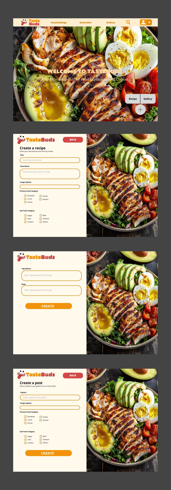
Designed the browsing experience for discovering food content, with individual recipe views that let users explore a selected recipe beyond the listing.
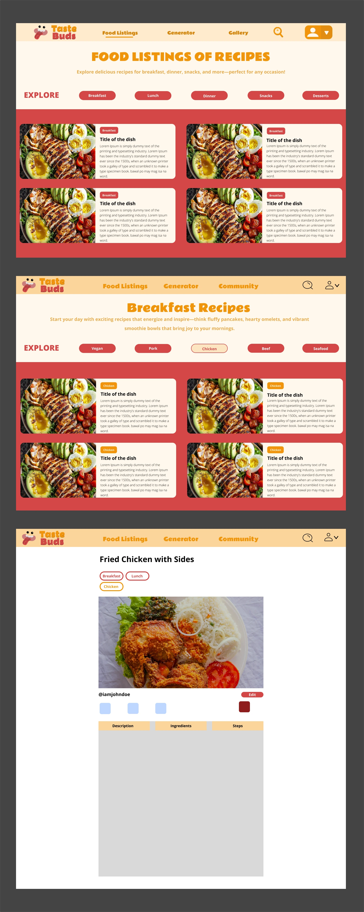
Designed a more direct way for users to find food content through search and filtering options, helping them narrow down results instead of relying on browsing alone.
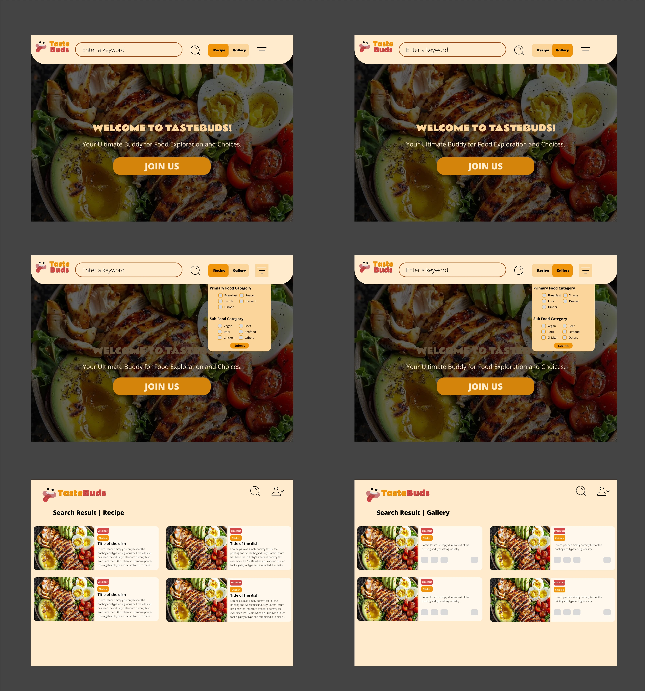
Designed the sign-up and login screens to support account access, allowing new users to join TasteBuds and returning users to access the logged-in experience.
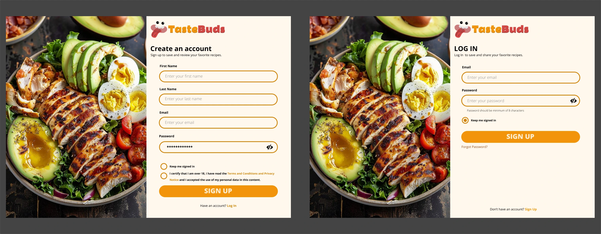
2025 Outcome
The 2025 project resulted in a complete high-fidelity website spanning discovery, search, recipes, community content, and creation. Alongside the UI/UX work, contributing to the full-stack development gave me a clearer view of how interface decisions translate into an implemented product.
Phase 02 — 2026 · Mobile
Revisiting TasteBuds
A year after building the original website, I returned to TasteBuds as a personal design exercise — wanting to understand how the same product experience would change if it were designed specifically for mobile, rather than treated as a smaller version of the website. That meant reconsidering navigation, layout, content hierarchy, and where key features lived, around a mobile interaction model. This was an independent exploration, not a continuation of the original academic assignment.
The mobile version covered the full product flow:
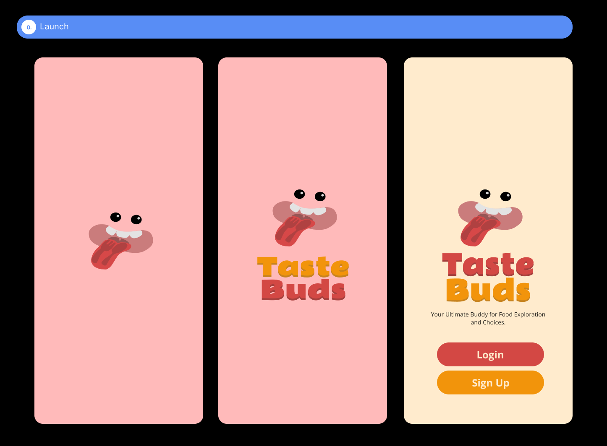
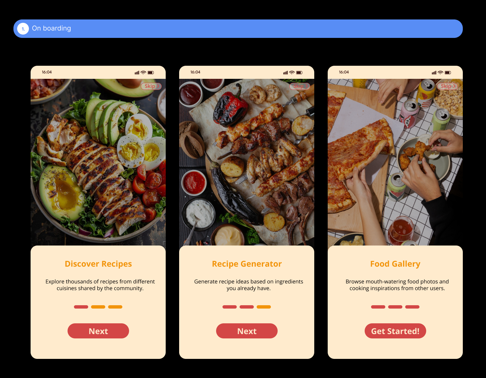
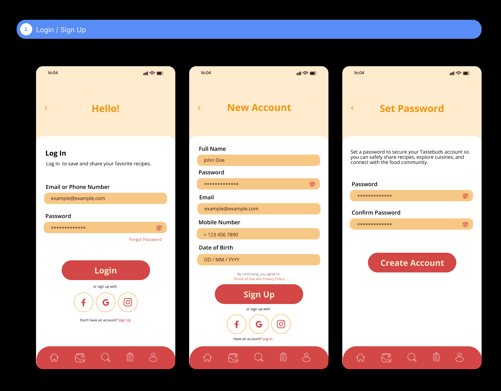
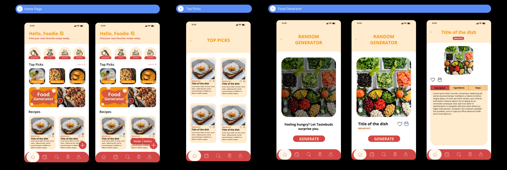
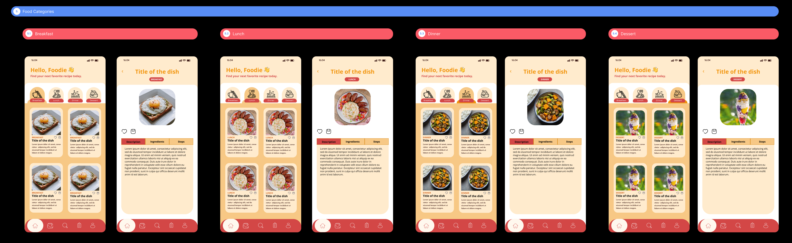
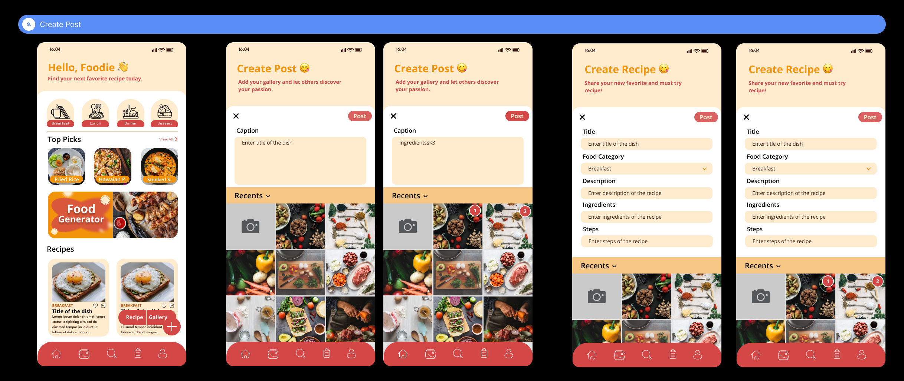
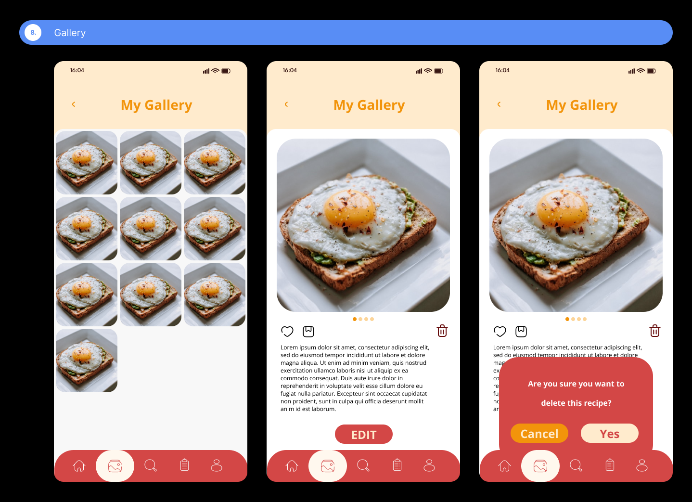
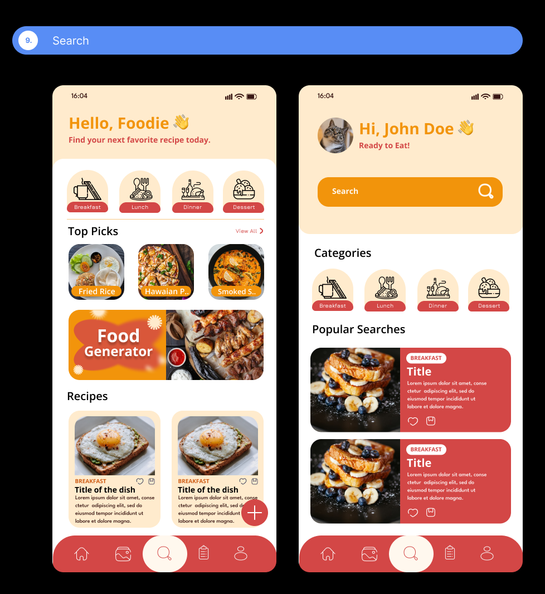
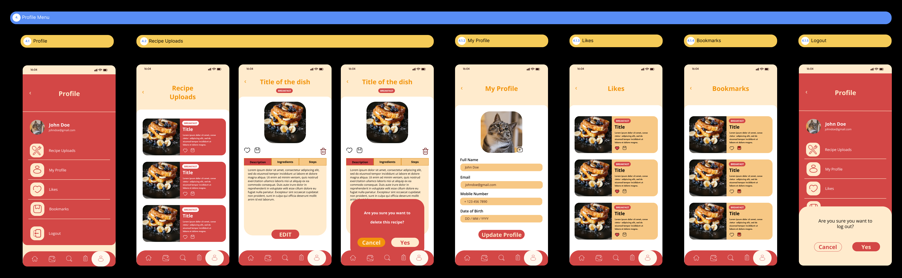
The mobile flow, shown as a complete product sequence.
Web → Mobile
The web experience used a desktop-oriented navigation structure. The mobile version introduced a bottom navigation system built for one-handed, thumb-driven access.
Logo, Food Listings, Gallery, Search, Profile, plus a floating action button for creation.
A bottom tab bar: Home, Gallery, Search, Recipe, Profile — placed for easy reach on a phone.
Rather than scaling the desktop interface down, the mobile version reorganized content around a narrower screen — rethinking what appeared first, what collapsed into secondary views, and how much a single screen needed to show at once.
Some features were regrouped for mobile, with dedicated areas for Food Categories, Top Picks, the Random Generator, Gallery, Recipe, Search, and Profile. These are presented as decisions made for the mobile context, not as improvements over the web version.
Design Evolution
The comparisons below focus on how each area of the product was reorganized for its platform — not on which version is "better."
| Area | Web (2025) | Mobile (2026) |
|---|---|---|
| Home | Web landing / home | Mobile home |
| Discovery | Food listings | Food categories / top picks |
| Search | Web search | Mobile search |
| Community | Gallery | Mobile gallery |
| Creation | Recipe / post creation | Mobile recipe creation |
| Profile | Logged-in experience | Profile |
Iteration
The original website was presented as part of the academic project, and I received feedback during the presentation and project consultations. When I came back to TasteBuds in 2026, I brought some of that earlier thinking into the mobile exploration — treating the original design as a starting point to reconsider, rather than a fixed result, particularly around navigation, layout, and feature organization.
Reflection
Low-fidelity wireframes helped me think through structure and placement before committing to visual design.
Designing across discovery, search, recipes, gallery, and creation taught me to treat the product as one connected experience.
Working as both designer and developer gave me a clearer sense of how interface decisions translate into implementation.
Revisiting TasteBuds a year later let me evaluate the same product from a different perspective and rethink it for mobile.
Closing
TasteBuds started as a college web development project in 2025 and became a personal opportunity to revisit and rethink the product in 2026. Across both versions, the project let me work through the full product experience — from discovering food and searching for recipes to creating and sharing content — and revisiting it a year later showed me how much platform context shapes navigation, hierarchy, and interaction design.